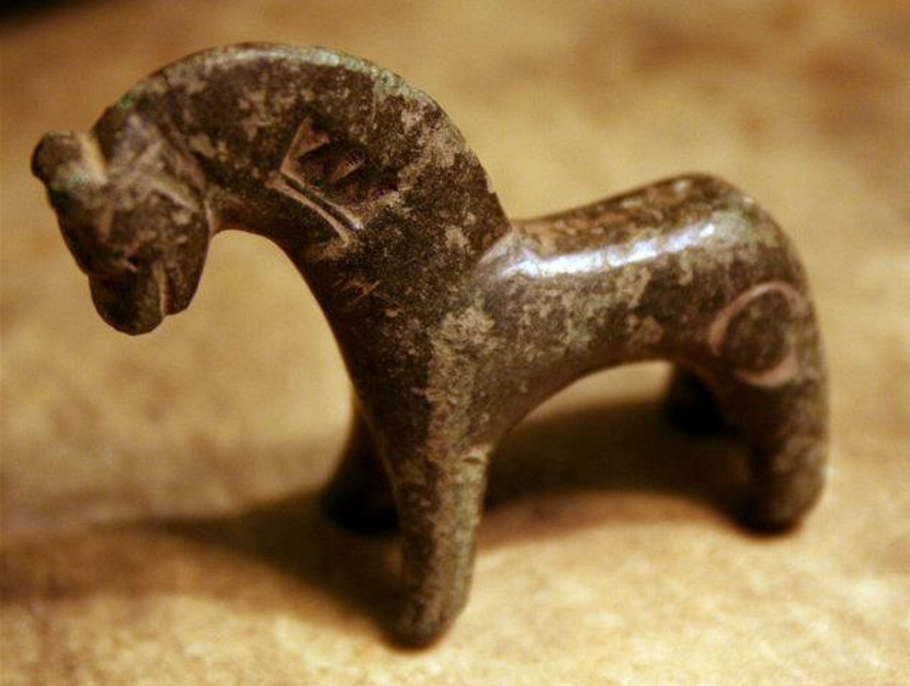
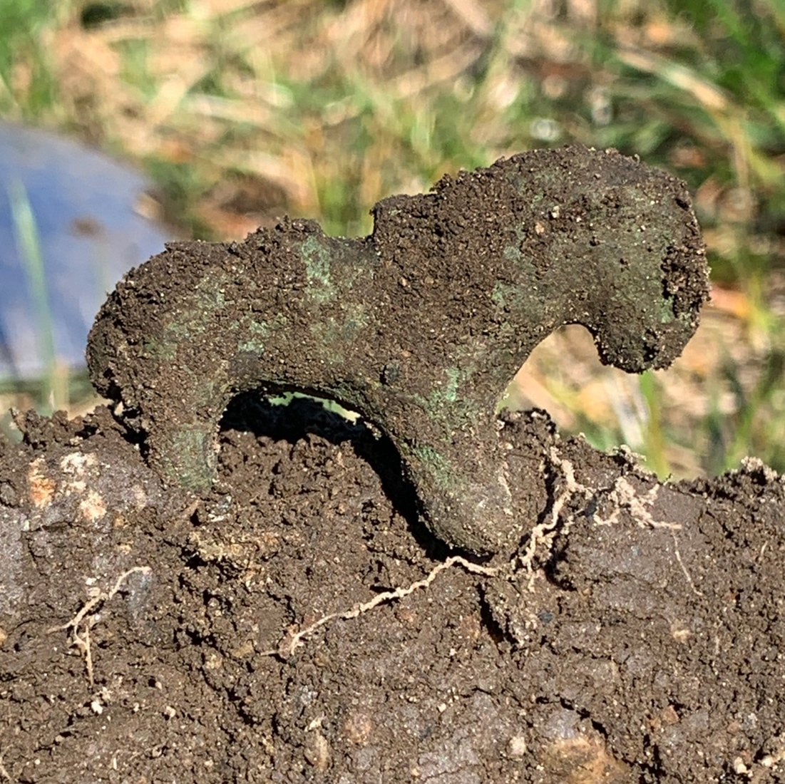
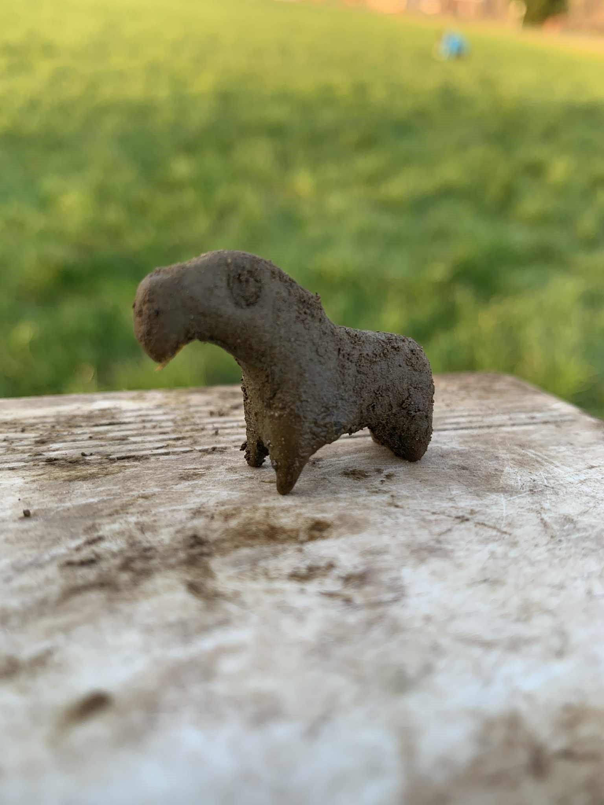

Tre jordfunn frå Etne skil seg ut som ei litt sjeldan samling. Det er tre små hestefigurar av koparlegering frå mellomalderen, funne ulike stadar i bygda. Dei blei i si samtid omtala som messinghestar. Skriftlege kjelder fortel om ulike bruksmåtar over fleire hundre år. Enkeltfunn er kjende frå grannelanda, men hovedtyngden av funn er konsentrert på Austlandet, særleg rundt Oslo. Å finne tre i Etne-bygda er svært sjeldan, og gjer at vi kan undre oss over kvifor dei hamna nett her.
Engehesten

Den største av dei tre blei funne på Enge i 2011. Denne har to stempel; ei krone på halsen og ein O på bakparten. Me kan tenke oss at dette er kontrollstempel, og at hesten har blitt brukt som vektlodd. Mange omtaler desse figurane nettopp som vektloddhestar. Denne veg 47 gram, og kan ha vore eit toøreslodd (ein kvart mark). Kong Håkon den femte (1270–1319) blir rekna for å vere den som standardiserte vektsystemet, og slike hestar blir ofte tilskrivne hans tid. Hesten har stått utstilt på Bryggen Museum i Bergen.
Sæbøhesten

Den mellomste hesten blei funne på Sæbø i 2022. Denne har sal, noko som er vanleg på mange messinghestar. Når ein finn ein slik midt utpå eit jorde kan me tenke på historiane om korleis folk trudde hestane hadde magiske eigeskapar. Dei kunne mellom anna henge dei rundt halsen på sjuke dyr for å gje helse og vern. Var det ei snor rundt halsen på kua som rauk? Eller blei det gjort handel her, og hesten som nå er 35g blei brukt som eit 1½ øreslodd?
Stødlehesten

Den minste hesten blei funne på Stødle i 2020. Like i nærheten låg kongsgarden der riksstyrar Erling Skakke kom frå. Kanskje var det sonen hans, kong Magnus (født 1156), som leika med denne som liten? I Víga-Glúms saga får me høyre om to gutar som hadde ein messinghest som leike. Denne soga blei skriven på 1200-talet, men forteljinga er frå 900-talet. Stødlehesten veg 24 gram – noko som kunne passe til eit øreslodd.
Frå folketrua høyrer me om at messinghestar har blitt brukt til alt frå hell til trolldom; garnsøkke for fiskelukke, eller planta i sjø for å øydelegge fiske. Me kan ikkje seie med sikkerhet kva hestane i Etne blei brukte til, anna enn at stempla på den største vitnar om handel. At Etne hadde betydning før og under mellomalderen veit me frå soga, og hestane er fine handfaste minne om fortida og kontakt med andre landsdelar.